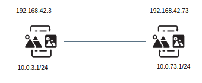
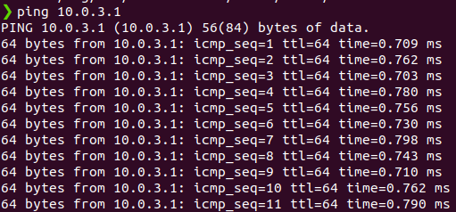
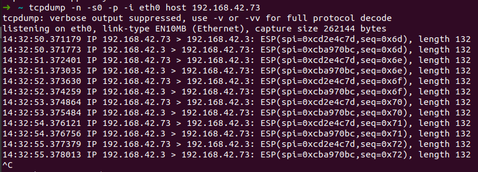
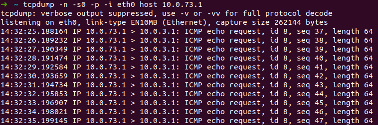

完成待办事件里面的一件事: 建一条 IPSEC 隧道.
网络拓扑如封面图所示, 主机 1, 2 之间是交换机, 我想加密它们之间的连接.
在家做实验: 在树莓派(简称 Pi)和另一台 arm 设备 R2s 之间建立隧道.
首先了解什么是 IPSEC(IP Security) 是一种用于建立 VPN 的协议, 有 3 个主要概念:
我们暂时只需了解这些, 在这个实验中, SA 是 Pi 和 R2s, ESP 是加密后的 ping 消息, 为方便期间, 仅给 AH 配置对称加密.
首先搭建环境, R2s 为 192.168.42.3, 内网是 10.0.3.1, Pi 同理.

为了制造一个内网的假象, 在 R2s 上加上一个地址
ip addr add 10.0.3.1/24 dev eth0
Pi 同理
$ sudo apt update
$ sudo apt install strongswan
开启转发
$ sudo vim /etc/sysctl.conf
net.ipv4.ip_forward = 1
net.ipv6.conf.all.forwarding = 1
net.ipv4.conf.all.accept_redirects = 0
net.ipv4.conf.all.send_redirects = 0
$ sudo sysctl -p
安装 StrongSwan
$ sudo apt update
$ sudo apt install strongswan
配置两端
$ sudo cp /etc/ipsec.conf /etc/ipsec.conf.orig
$ sudo nano /etc/ipsec.conf
R2s 的配置
# /etc/ipsec.conf
config setup
charondebug="all"
uniqueids=yes
conn devgateway-to-prodgateway
type=tunnel
auto=start
keyexchange=ikev2
authby=secret
left=192.168.42.3
leftsubnet=10.0.3.1/24
right=192.168.42.73
rightsubnet=10.0.73.1/24
ike=aes256-sha1-modp1024!
esp=aes256-sha1!
aggressive=no
keyingtries=%forever
ikelifetime=28800s
lifetime=3600s
dpddelay=30s
dpdtimeout=120s
dpdaction=restart
Pi 的配置
# /etc/ipsec.conf
config setup
charondebug="all"
uniqueids=yes
conn devgateway-to-prodgateway
type=tunnel
auto=start
keyexchange=ikev2
authby=secret
left=192.168.42.73
leftsubnet=192.168.42.73/24
right=192.168.42.3
rightsubnet=192.168.42.3/24
ike=aes256-sha1-modp1024!
esp=aes256-sha1!
aggressive=no
keyingtries=%forever
ikelifetime=28800s
lifetime=3600s
dpddelay=30s
dpdtimeout=120s
dpdaction=restart
生成一个密钥
➜ ~ head -c 24 /dev/urandom | base64
KRIweyhJwSTMEofiH6IPd2gm8FjB6cGY
分别加入 R2s 和 Pi 的 /etc/ipsec.secrets
❯ cat /etc/ipsec.secrets
192.168.42.73 192.168.42.3 : PSK "KRIweyhJwSTMEofiH6IPd2gm8FjB6cGY"
192.168.42.3 192.168.42.73 : PSK "KRIweyhJwSTMEofiH6IPd2gm8FjB6cGY"
分别启动
ipsec restart
测试效果, 在 Pi 上 ping R2s

在 R2s 上抓包, 发现了加密后的信息

原来的报文只有 64 字节, 加密和封装后变成 132 字节.
